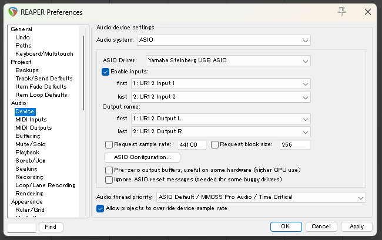
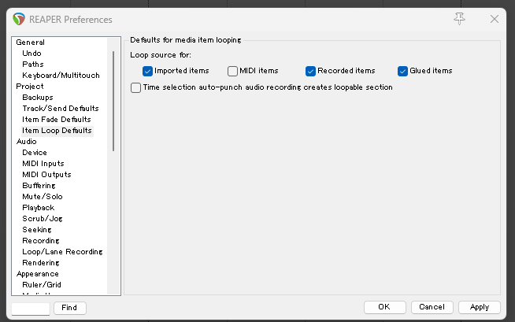

REAPER
使い方
大基本
- 音声、映像、MIDIデータなどはすべて
アイテムという扱いになる。
Midi
トラックを挿入後、Insert > New Midi Item または Ctrl + 左クリックで追加する。
書き出し
File - Render
設定
Options > preferences (ctrl + p)
初期設定(基本固定)
- インターフェース : Audio - Device よりAudio system を ASIOにする。 ASIO Driver で出力したい機器を選択する。

- VST : Plugins - VST より pathsを追加する。Edit path > Add path より
C¥ProgramFiles¥VSTPlugInsを追加する。(なければ作成する。) このフォルダにVSTを入れていくことになる。またexeファイルで自動でインストールするような音源はこのフォルダを多くの場合、インストール先のフォルダとして選んでくれる。[2] - 各アイテムを繰り返さない : デフォルトだと各アイテム(Midi等)を伸ばそうとするとループしていってしまう。ドラムとかなら便利だが基本的にその挙動はしてほしくないのでループをしないように変更する。Project > Item Loop Defaults から 各アイテムのループについて変更可能。

音源
インストール
dll/vst3ファイルが配布されている場合
参考[3]
dll/vst3ファイルをC¥ProgramFiles¥VSTPlugInsにコピーする。
プラグインが読み込まれていない場合、preferences の Plug-ins - VST から Re-scan すると読み込まれる。
各音源
Magical 8bit Plug 2
Magical 8bit Plug | YMCK Official Website
ピコピコ音、チップチューンの音源。日本製の中では最大手だろう。
メロディーは Pulse/Square の Duty 50%。
Synth1
シンセサイザー。
プラグイン
Options > Show Reaper resource ~
でフォルダが表示されるのでそこからUserPluginsを開く。そこにdllファイル等を入れるとプラグインの導入が完了する。
SWS
install
公式からexeファイルが配布されているので実行。
ReaPack
ReaPack: Package manager for REAPER
公式からdllファイルが配布されているのでそれをUserPluginsに入れる。